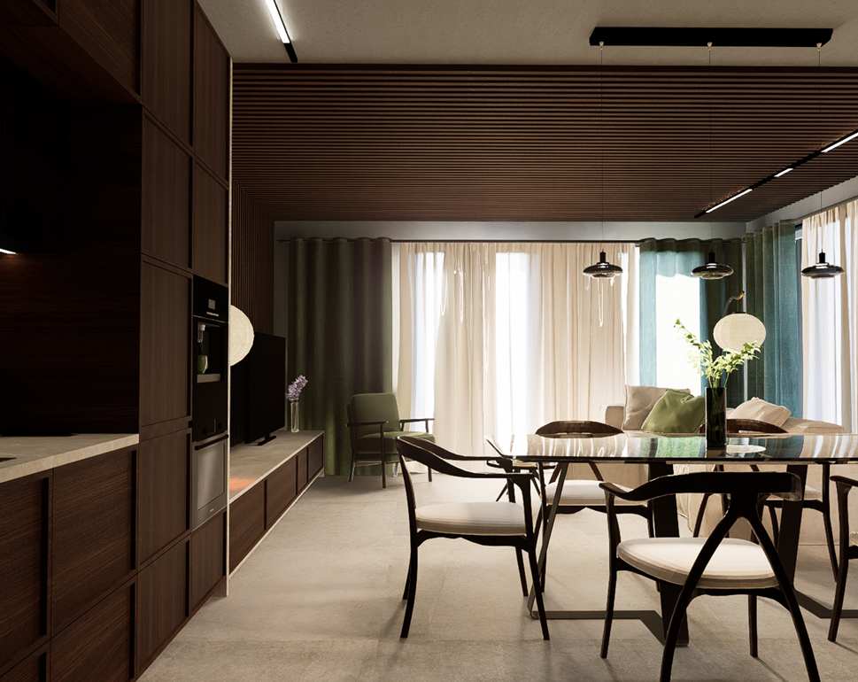
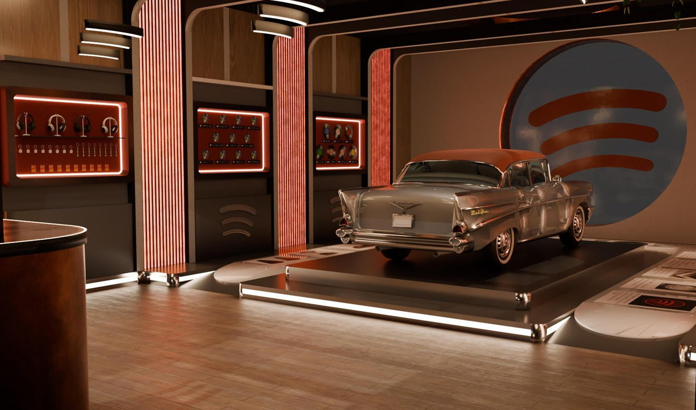

Projektuję wnętrza z drewna, światła i ciszy. Studiuję architekturę wnętrz, eksperymentuję z formą i szukam równowagi między funkcją a atmosferą.
Studentka
Architektury Wnętrz
Projektuję mieszkania, które oddychają. Łączę funkcjonalny układ z naturalnymi materiałami, ciepłym światłem i detalem o retro charakterze. Moje wnętrza są czyste, przejrzyste, wygodne i bliskie codzienności.
Projektuję wnętrza komercyjne, które opowiadają historię. Łączę funkcjonalność z formą wizualną, tworząc przestrzenie, które angażują, zapraszają i budują relację z odbiorcą. Inspiruję się materiałem, narracją i doświadczeniem użytkownika
Elegancka przestrzeń stworzona z myślą o relaksie i skupieniu. Ciemne drewno, skórzane wykończenia i nastrojowe światło budują atmosferę prywatnego azylu.
Spokojna i wyciszająca przestrzeń łącząca japońską prostotę z nordyckim ciepłem. Naturalne materiały, miękkie tkaniny i stonowana kolorystyka tworzą wnętrze sprzyjające odpoczynkowi i harmonii.
Projekt inspirowany twórczością Claude’a Moneta.
Projekt łączy naturalne drewno z chłodnym gresem, tworząc przytulną, a zarazem nowoczesną przestrzeń. Kolory zieleni budują atmosferę spokoju i równowagi.